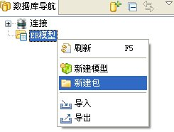
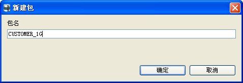
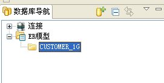
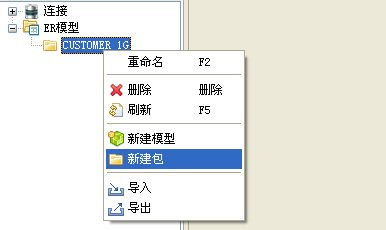
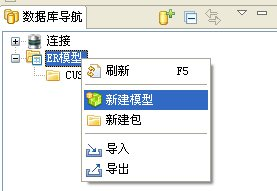
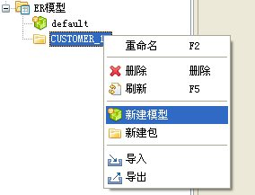
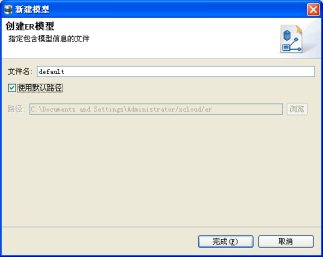
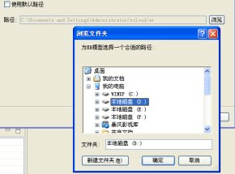
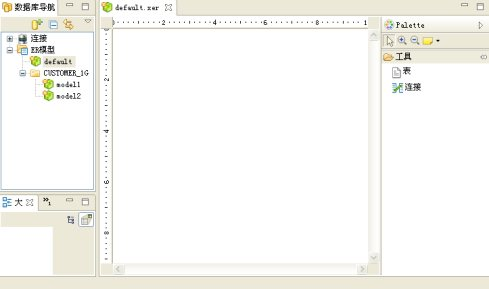

SQLDeveloper的ER建模功能主要为行云数据库提供了图形化的建模环境。使用它可以方便地对数据库模型进行分析设计。利用它还可以把Oracle中的数据库模型导入到行云数据库中。
新建包功能主要是为了给ER模型提供一个逻辑上的层次结构，目的是在使用过程中条理清晰，结构分明，增强用户体验。
在SQLDeveloper的数据库导航视图右键ER模型，如图：

在弹出的右键菜单中选择新建包，弹出填写包名的对话框，如图：

填写包名，点击确定后在树节点增加了一个新创建的包：

在新建的包下点击右键，也可以在包的基础上新建包，如图：

提供新建ER模型功能，在SQLDeveloper的数据库导航视图右键ER模型，如图：

也可以在建好的包对应的节点上右键，同样可以新建ER模型。如图：

在弹出的右键菜单中选择新建模型，弹出新建模型的向导框，如图：

填写文件名和指定文件所在路径，如果使用自定义路径，将“使用默认路径”的状态设置成未选中状态，点击“浏览”按钮，选择用户自定义的路径，如图：

设置好文件名和文件路径后点击确定按钮，这时导航树节点增加一个ER文件的节点，同时代表这个节点对应的ER模型文件的编辑器打开，进入到编辑器环境。如图：

此时生成一个*.xer为后缀的文件，最后持久化到该文件中。